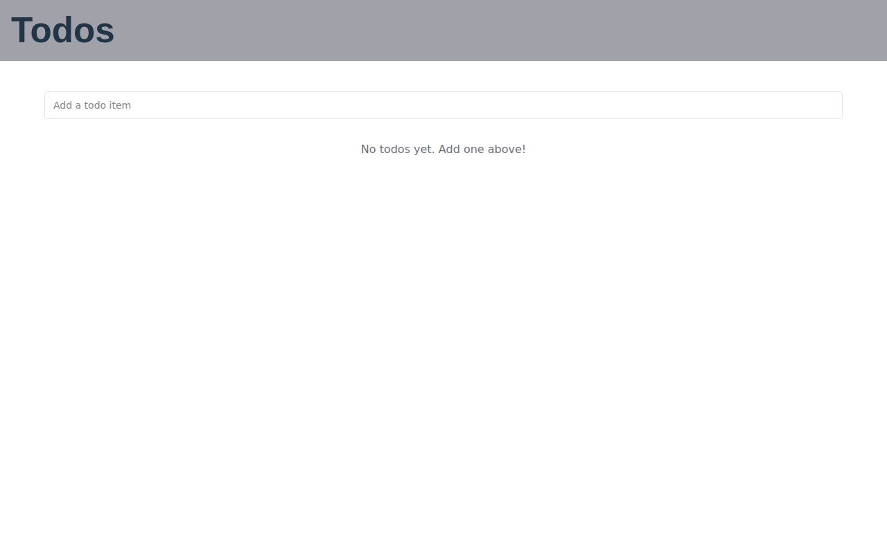
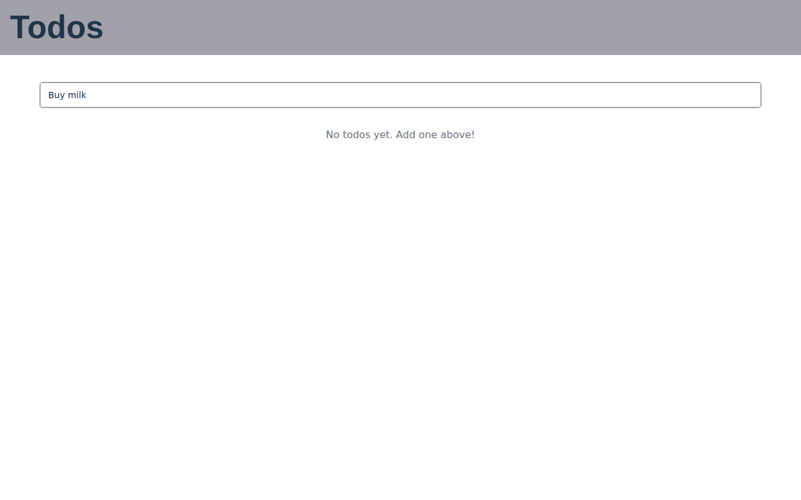
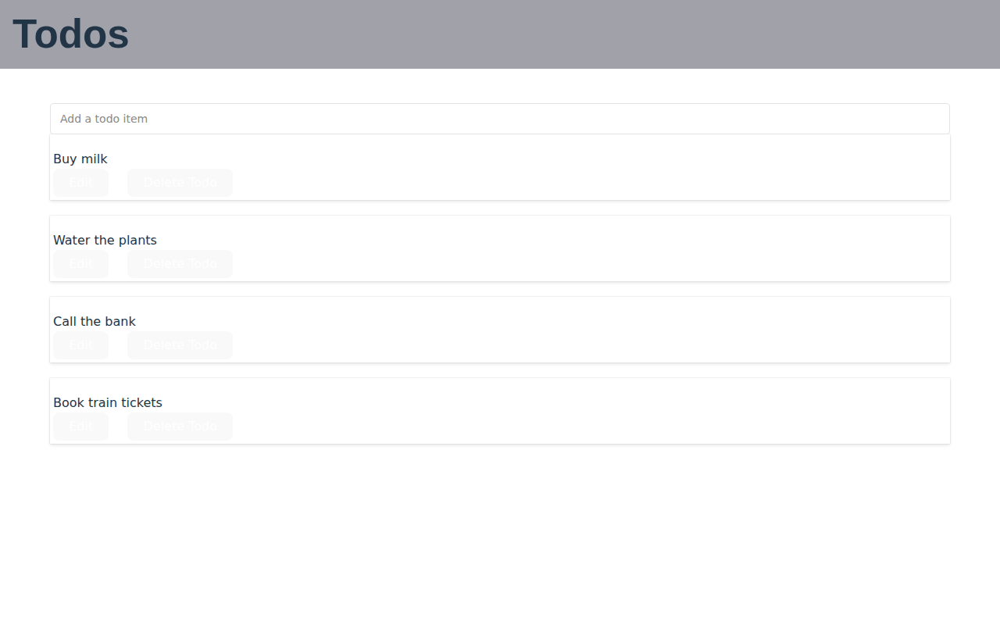
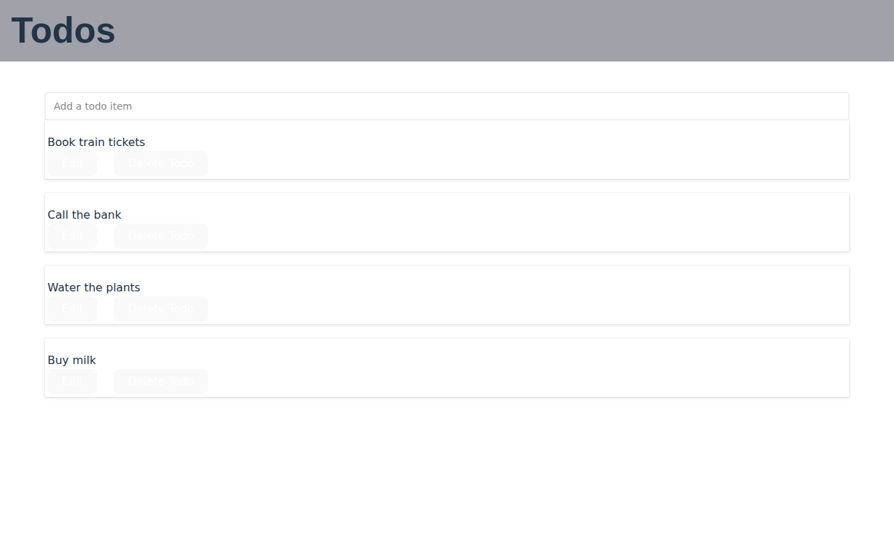
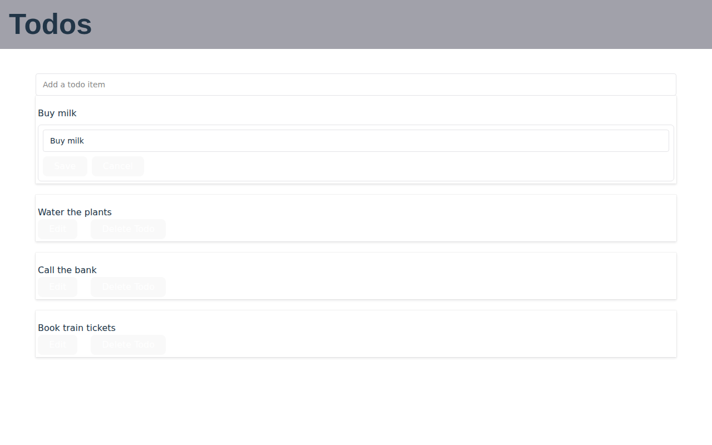
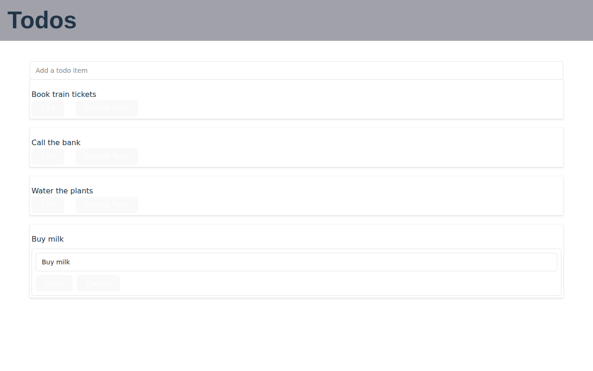
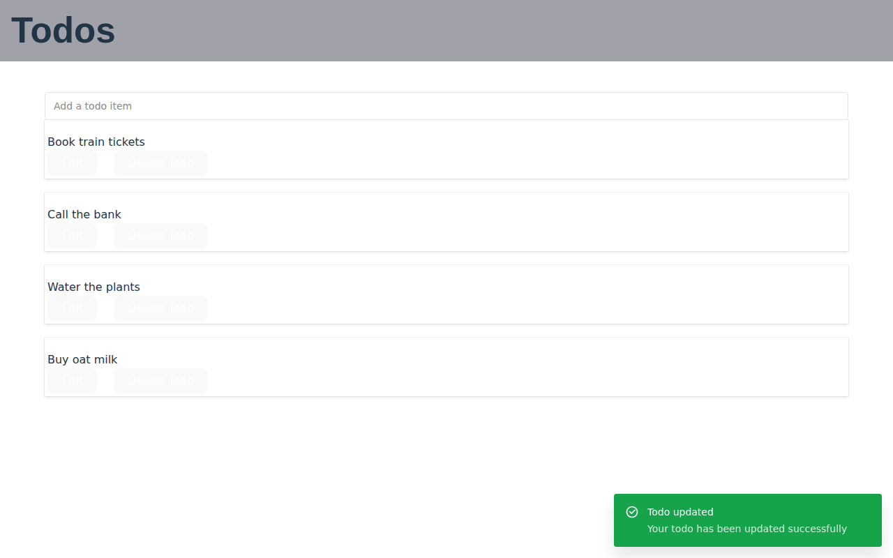
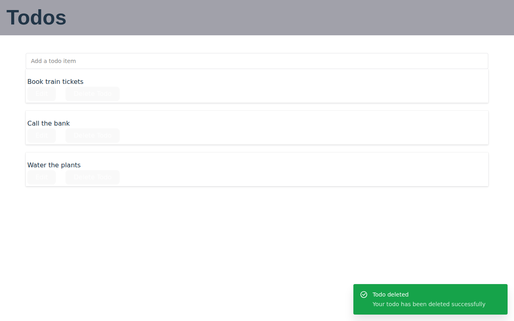
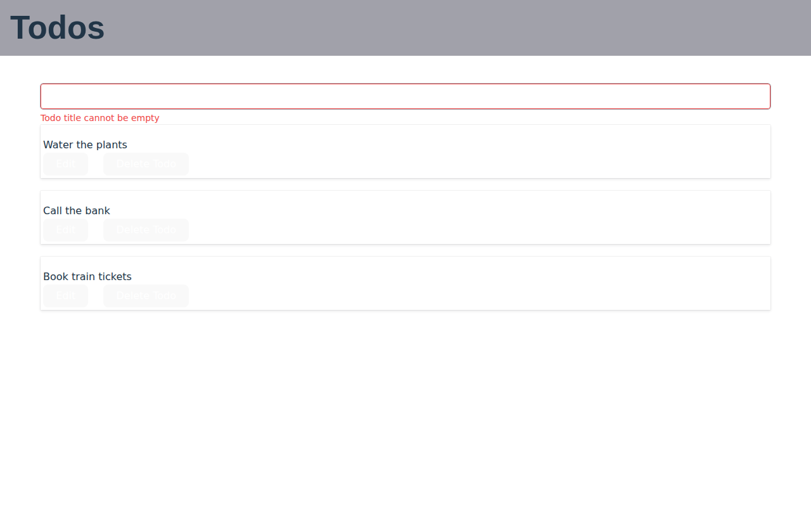
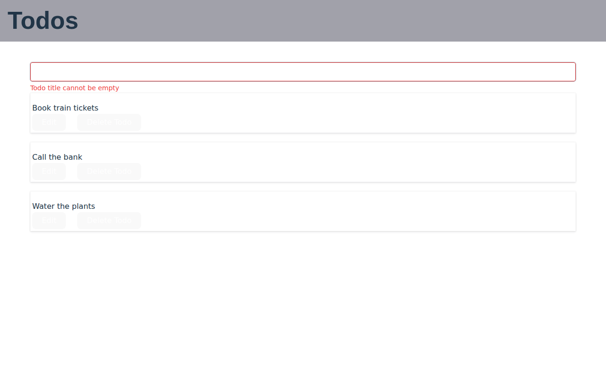

Phase 5 visual review: P4 → P5
Screens
Empty list 01-list-empty
pixel-identical; computed-style differences: 0


A title typed 02-create-typed
pixel-identical; computed-style differences: 0


Created, toast shown 03-create-done
pixel-identical; computed-style differences: 0


Four todos 04-list-several
differs: Order only: newest first (Q6.4). The same four rows, reversed; no style changes. diff image



Edit form open on “Buy milk” 05-edit-open
differs: Order only (Q6.4): “Buy milk” is now the last row, so the open edit form moved from the top to the bottom. The rows, the form and their styles are otherwise the same. diff image



Renamed, toast shown 06-edit-saved
differs: Order only (Q6.4): the renamed “Buy oat milk” is now the last row. diff image



Deleted, toast shown 07-delete-done
differs: Order only (Q6.4): the first and third remaining rows swap. The “Todo deleted” toast looks the same; it now appears only after the server has answered (Q6.9), which a screenshot cannot show. diff image



Empty title refused 08-validation-error
differs: Order only (Q6.4): the first and third rows swap; the error text is unchanged. diff image



Manual UAT (owner)
Start the backend with uv run python -m backend.app.main (repository root) and the frontend with npm run dev (folder frontend), then open http://localhost:5173. Each item is also covered by automated tests (vitest, Playwright, pytest); this is the human check of the brief’s validation strategy.
- Newest first (Q6.4). Add three todos one after the other. The last one added is at the top.
- Delete toast after the server (Q6.9). Delete a todo and confirm: the row disappears at once, and “Todo deleted” appears once the server has answered. Then stop the backend (Ctrl+C), delete another todo and confirm: the row disappears, and after about a second (one automatic retry) “Failed to delete todo” appears with a Retry button, and the row comes back. (Retry itself is covered by a vitest test.)
- Readable server errors (Q6.3, Q6.2). Paste a title with a tab character in it (for example copied from a text editor) and press Enter: the toast says “API Error 422: title must not contain control characters”, not “[object Object]”.
- Title length in characters (Q6.2). Paste 255 emoji (for example 😀) as a title: the hint says “0 characters remaining” and the todo is created. Type or paste 256 characters: nothing is cut off while typing, and Enter shows “Todo title cannot exceed 255 characters”.
- Edit keeps the description (Q6.7). The UI has no description field. Create a todo with a description through the API docs (http://127.0.0.1:8000/docs, POST /todo), rename it in the UI, then GET it in the docs: the description is unchanged, and no “not implemented yet” appears.
- Startup migration of an old database (Q6.6, Q6.7). From the repository root:
cp analysis/basictodo/baseline/db/sample-legacy-p5.db /tmp/old.db, thenDATABASE_URL=sqlite:////tmp/old.db BASICTODO_LEGACY_TZ=Etc/GMT-5 uv run python -m backend.app.main. The log says “stamped 0001 and upgraded to 0002; backup old.db.pre-0002.bak”;/tmp/old.db.pre-0002.bakexists (mode 600); GET /todo showscreated_atfive hours earlier than before, ending in Z, and the todo “Old UI todo” has no description. Started again, the log says “already at revision 0002”. - Local only (SEC-002). With the backend running, open http://<this machine’s LAN address>:8000/ from another device or with curl: the connection is refused. http://127.0.0.1:8000/ answers.
Notes
- P4 equals the Phase 2 capture F2 (
P4/compare-screens-vs-F2.md) except 17 pixels at the border corners of 08, which F2 captured while an animation was still running; the harness now waits fordocument.getAnimations(). - The bundle differs between P4 and P5 (
dist.sha256): the frontend commits of Phase 5 (Q6.4 total, Q6.7, Q6.9, Q6.3, Q6.2).